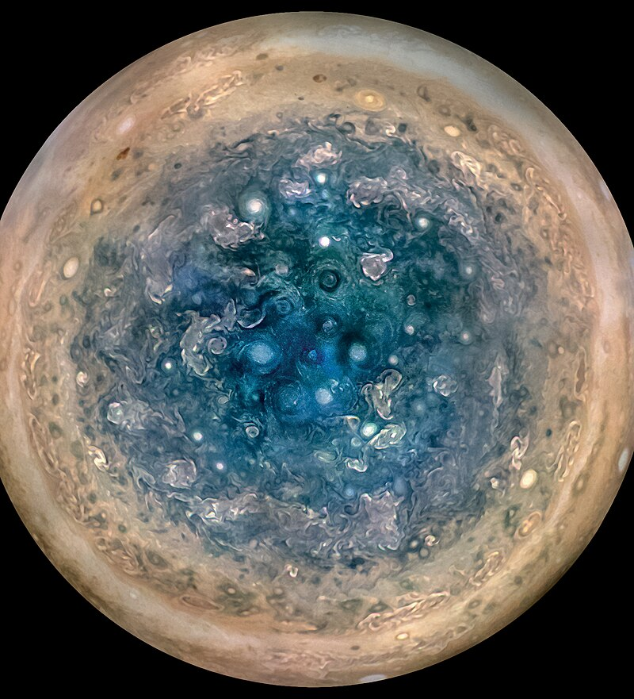
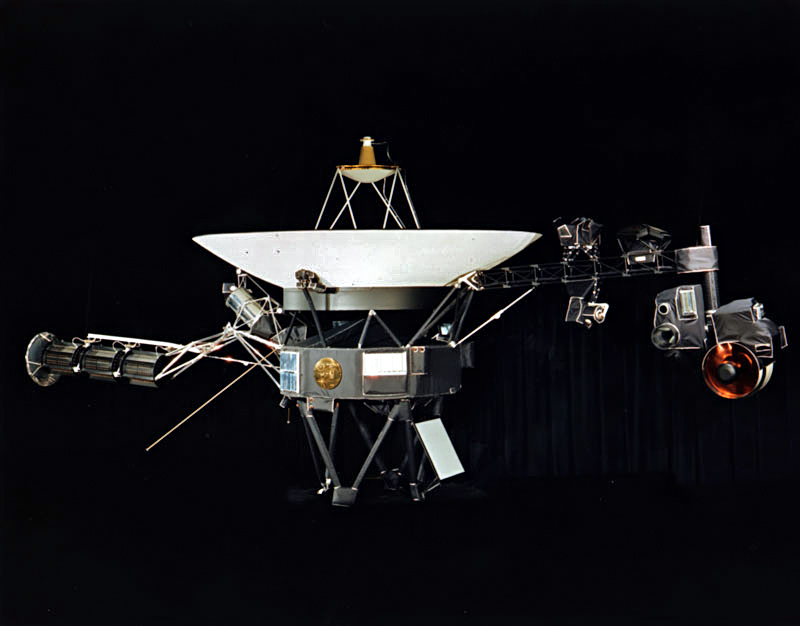
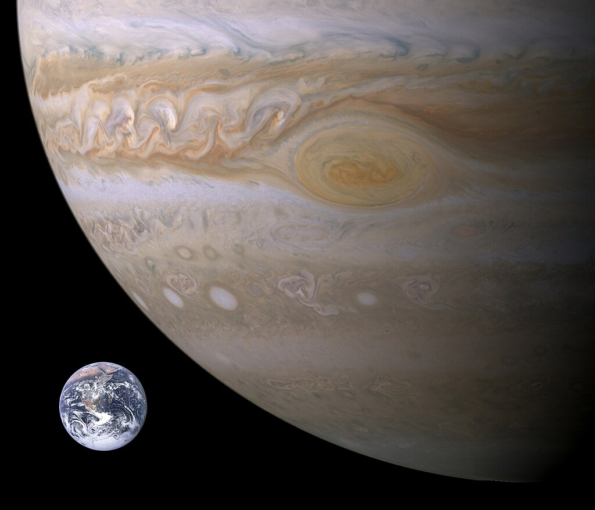

Юпітер
Юпітер - найбільша планета Сонячної системи, п'ята за віддаленістю від Сонця. Поряд із Сатурном Юпітер класифікується як газовий гігант. Планета була відома людям з давнину, що знайшло своє відображення в міфології та релігійних віруваннях різних культур: месопотамської, вавілонської, грецької та інших. Сучасна назва Юпітера походить від імені давньоримського верховного бога-громовержця. Ряд атмосферних явищ на Юпітері - шторми, блискавки, полярні сяйва, - має масштаби, що на порядки перевершують земні. Примітною освітою в атмосфері є велика червона пляма - гігантський шторм, відомий з XVII століття.

За даними на травень 2023 року, у Юпітера відомо 95 супутників - на 51 менше, ніж у Сатурна. За оцінками, супутників може бути не менш як сотня. Супутникам дано в основному імена різних міфічних персонажів, так чи інакше пов'язаних із Зевсом-Юпітером. Супутники поділяють на дві великі групи - внутрішні (8 супутників, галілеєві та негалілеєві внутрішні супутники) і зовнішні (84 супутники, також поділяються на дві групи) - таким чином, всього виходить 4 "різновиди". Чотири найбільші супутники - Іо, Європа, Ганімед і Каллісто - були відкриті ще в 1610 році Галілео Галілеєм.
Під час великих протистоянь Юпітер видно неозброєним оком як один із найяскравіших об'єктів на нічному небосхилі після Місяця та Венери. Диск та супутники Юпітера є популярними об'єктами спостереження для астрономів-аматорів, які зробили низку відкриттів (наприклад, комети Шумейкерів — Леві, яка зіткнулася з Юпітером у 1994 році, або зникнення Південного екваторіального поясу Юпітера у 2010 році).

Астрономічні характеристики
Юпітер – найбільша планета Сонячної системи, газовий гігант. Його екваторіальний радіус дорівнює 71,4 тис. км, що у 11,2 разу перевищує радіус Землі. Юпітер — єдина планета, у якої центр мас із Сонцем перебуває поза Сонцем і від нього приблизно на 7 % сонячного радіусу./p> 
Маса Юпітера в 2,47 рази перевищує сумарну масу решти планет Сонячної системи, разом узятих, у 317,8 разів — масу Землі і приблизно в 1000 разів менше маси Сонця. Щільність (1326 кг/м³) приблизно дорівнює щільності Сонця та в 4,16 разів поступається щільності Землі (5515 кг/м³). При цьому сила тяжіння на його поверхні, за яку зазвичай приймають верхній шар хмар, більш ніж у 2,4 рази перевищує земну: тіло, яке має масу, наприклад, 100 кг, важитиме стільки ж, скільки важить тіло масою 240 кг на поверхні Землі. Це відповідає прискоренню вільного падіння 24,79 м/с на Юпітері проти 9,81 м/с для Землі.
Дослідження Юпітера
Дослідження Юпітера протікали переважно за участю апаратів НАСА США. З початку 1970-х років і до наших днів американські місії надали значні дані про гігантську газову планету та її супутників. Одним з перших значних успіхів були місії "Піонер-10" і "Піонер-11" у 1973 і 1974 роках відповідно, які пролетіли повз Юпітер, отримавши перші знімки високої роздільної здатності та основні параметри його магнітного поля.
Потім у 1979 році "Вояджери" зробили детальніше дослідження, наблизившись до планети на відстань близько 130 тисяч кілометрів і передавши великий обсяг даних, включаючи фотографії та інформацію про магнітосферу Юпітера. Найбільш тривалу місію, "Галілео", НАСА запустила в 1995 році, вона проводила дослідження в системі Юпітера до 2003 року, отримавши цінні відомості про його атмосферу та супутників.
Сучасні дослідження, такі як місія "Юнона", продовжують розширювати наше розуміння Юпітера та його оточення. Також активно розглядаються майбутні проекти, такі як Europa Jupiter System Mission, націлені на вивчення галілеєвих супутників планети, включаючи дослідження потенційно придатних для життя океанів під крижаними кірками.
Велика червона пляма
Велика червона пляма — овальне утворення розмірів, що змінюються, розташоване в південній тропічній зоні. Було відкрито Робертом Гуком у 1664 році. В даний час воно має розміри 15×30 тис. км (діаметр Землі ~12,7 тис. км), а 100 років тому спостерігачі відзначали в 2 рази більші розміри. Іноді воно буває не дуже чітко видимим. Велика червона пляма - це унікальний довгоживучий гігантський ураган, речовина в якому обертається проти годинникової стрілки і здійснює повний оберт за 6 земних діб.

Завдяки дослідженням, проведеним наприкінці 2000 року зондом «Кассіні», було з'ясовано, що Велика червона пляма пов'язана з низхідними потоками (вертикальна циркуляція атмосферних мас); хмари тут вищі, а температура нижча, ніж у решті областей. Колір хмар залежить від висоти: сині структури - верхні, під ними лежать коричневі, потім білі. Червоні структури – найнижчі. Швидкість обертання Великої червоної плями становить 360 км/год. Його середня температура становить -163 °C